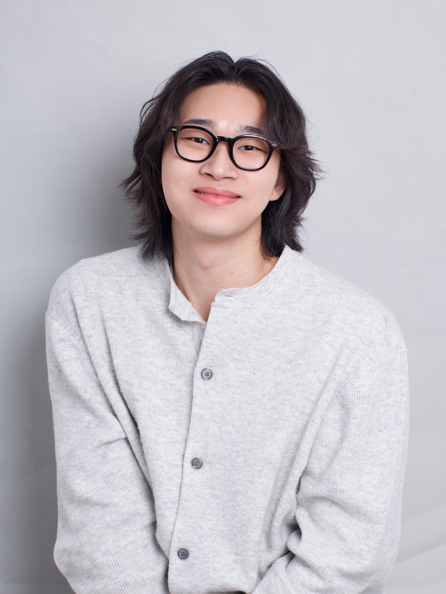

Seoul National University B.S.
Department of Mechanical Engineering, College of Engineering

B.S. Candidate, Mechanical Engineering — Seoul National University
I'm an undergraduate at Seoul National University's Department of Mechanical Engineering, working across mechatronics design and robotics research. I'm currently a research intern at RPM Lab (advised by Prof. Ayoung Kim), studying multi-sensor SLAM on quadruped robots. On the side, I enjoy building things with LLM tooling — I run Gwanak AI Club, an SNU community of ~330 AI practitioners.

A glove-type wearable Hangul keyboard: 16 tactile switches, sequential thumb-press input, with repeated taps mirroring the 가획 principle of Hangul.
An SNU community (KakaoTalk open chat) for AI/LLM practitioners to share the latest developments and individual use cases. Focused on hands-on LLM tooling and workflow sharing rather than passive news consumption.
Bands I've played in. Vocals & guitar.
A small gallery — portfolio moments and life beyond engineering. To be filled.